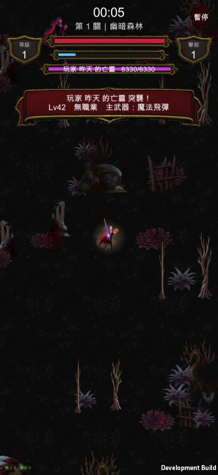

手搓廣告遊戲選集 · 吸血鬼復仇 · 共用後端變更
排行榜加了一個 nullable 的配裝欄位並已部署。部署前後跑同一份測試， 殭屍防線與地城迴響的回應完全相同。v2 五項功能的行為層也在 Unity 裡量過了。

完整的風險與影響範圍在
docs/vampire-revenge-wraith.md， 那一份是寫給你拿去跟殭屍／DnD 那邊對齊的。下面是摘要。
ALTER TABLE scores ADD COLUMN build TEXT;
nullable、無約束、O(1) 中繼資料變更、既有每一列都是 NULL。
Worker 端三處改動全部在 vampire 分支內。
① 三款遊戲的部署前基準（POST + GET 各一次）
② 先跑遷移 ← 舊 Worker 還在線上。它的 SELECT/INSERT 都是明列欄位，
多一個欄位它看不到也不會壞，所以這一步零風險
③ 部署新 Worker
④ 跟 ① 完全一樣的測試再跑一次，逐字比對
全程零停機，中間沒有任何一刻是「Worker 要讀一個還不存在的欄位」。
| 部署前 | 部署後 | |
|---|---|---|
| 殭屍防線 GET 欄位 | date, name, score, wave, win |
完全相同 |
| 殭屍防線 GET 內容 | Alex / 164349 / wave 85 |
逐字相同 |
| 殭屍防線 POST | {"ok":true,"rank":20} |
{"ok":true,"rank":22} |
| 地城迴響 GET 欄位 | date, depth, kills, level, name, time, win |
完全相同 |
| 地城迴響 GET 內容 | Alex / depth 24 / lv16 / 263 kills |
逐字相同 |
| 地城迴響 POST | {"ok":true,"rank":5} |
{"ok":true,"rank":6} |
兩款的回應都沒有多出 build 欄位——那是刻意的。雖然 JsonUtility 會忽略
不認識的欄位，但「不動就是零風險」比「應該不會壞」可靠，而且要驗的東西少一半。
吸血鬼這邊：舊版 App（不送 build）照樣上傳成功，向後相容。
另外在本機用「沒有 build 欄位的舊 schema ＋ 三款各一筆舊資料」模擬過整個遷移，
三筆舊資料都還在、build 都是 NULL。
過程中往正式資料庫寫了 26 筆 ZZ_* 測試列，其中一筆 kills=99999
一度衝到吸血鬼榜首。已經逐筆核對後全部刪除，目前殘留 0 筆，三款的榜首
都回到真實資料。
但正確做法應該是：破壞性測試全部放 wrangler dev --local，正式環境只跑
最小的煙霧測試。這一條已經寫進文件了。
Worker 端刻意不解析遊戲語意——三款共用，它不該知道「magicBolt 是不是 一把真的武器」。只做三件跟遊戲無關的把關：
| 把關 | 擋掉什麼 |
|---|---|
| 型別必須是字串 | {"a":1}、12345、陣列 |
| 長度 ≤ 256 | 拿這個欄位灌爆資料庫 |
字元集白名單 [A-Za-z0-9;:,_-] |
HTML／script、引號、反斜線、換行、空白、emoji、控制字元 |
不合格一律存 NULL，但那一列的成績照樣成立——沒有理由因為配裝碼壞掉 就把一個有效的分數整筆丟掉。實測 7 種惡意輸入全部擋下。
client 端還有第二道（實機量過）：
惡意輸入 （空字串） → 拒絕 ✓
惡意輸入 9;count;-;knife:1;- → 拒絕 ✓ 版本號不對
惡意輸入 1;不存在的角色;… → 拒絕 ✓
惡意輸入 1;count;-;不存在的武器 → 拒絕 ✓
惡意輸入 1;count;-;-;- → 拒絕 ✓ 沒有武器的亡靈打不了人
惡意輸入 亂七八糟 → 拒絕 ✓
等級偽造 knife:999 → 夾到 6（飛刀上限 6） ✓
解不出來一律回 null，不回半殘的物件——呼叫端會拿它去生成敵人，
半殘資料會變成「一隻沒有能力、站著不動的魔王」，比沒有還糟。
亡靈的強度用等級推不用分數：分數是難度加權後的擊殺數，而且可以偽造；
等級至少有伺服器的 LIMITS.level = 999 夾著。
| # | 風險 | 現況 |
|---|---|---|
| 1 | 沒有身分驗證，分數與配裝都可偽造 | 既有的，不是這次帶進來的。但這次把可偽造的東西從數字擴大到字串，所以 client 端加了整套夾制。仍擋不住「合法但很怪的配裝」（7 把武器全滿等），不過強度照等級算、等級有上限，不會做出打不死的東西 |
| 2 | 名字沒有髒話過濾 | 亡靈的名字會很顯眼地掛在橫幅、魔王血條、死亡定格的死因上。介意的話改成「第 N 名的挑戰者」是一行的事，跟我說就改 |
| 3 | 沒有速率限制、沒有列數上限 | 也是既有的。這次唯一多做的是把單列的 build 壓在 256 bytes。沒有做 IP 限流／每日上限／舊資料清理 |
| 4 | 冷啟動：線上前 25 名目前全是舊紀錄 | build 是這一版才加的，所以線上一個亡靈都抽不到（實測就是這樣）。已加「自己上一局」當退路，功能第一天就會動 |
沒有真的讓 NPC 跑一份 VrWeapons。 那個類別從頭到尾綁死玩家——
每一條開火路徑最後都呼叫「傷害敵人」的函式，要讓 NPC 用它等於要把
傷害目標端整個抽象化，而那是全遊戲每一次傷害都會走的路徑。
改成把配裝對映到既有的魔王能力：
| 主武器 | 能力 | 讀起來像 |
|---|---|---|
| 落雷／寒冰／光環／十字斬／碎岩 | 環爆 | 範圍壓制 |
| 飛刀／魔法飛彈／血鎖 | 狙擊 | 遠程點名 |
| 隕石／聖水／骨釘 | 召喚 | 把場面鋪滿 |
| 聖光書／壁壘 | 衝刺 | 貼身 |
生出來的是一筆動態的 BossDef，走既有的 SpawnBoss——所以魔王血條、
死亡定格的死因、必掉寶箱，全部免費就有。外觀用那個玩家當時的角色走路
素材 ＋ 紫紅染色，美術成本 $0。
三層資料來源：線上榜（前 25 有配裝碼的）→ 本機快取 → 自己上一局 → 都沒有就不出亡靈（少一個事件，不是壞掉，但會留一行 log）。
出場時間：只有突擊模式、4:30。標準模式已經有 10 隻魔王＋精英＋包圍網， 再塞一隻讀不出來是特別的。
Library/ 重建後跑起來，行為層全部通過：
新武器圖示 11/11 載入成功 ✓
特效 blade_waltz / plague_field / gravity_star / quake_burst / bone_spike = 各 14 幀 ✓
不朽者 走路=12 攻擊=8 血鎖裁判 走路=12 攻擊=8 ✓
著墨比例 不朽者=0.927 血鎖裁判=0.943
著墨比例有量到（不是 1.000 的預設值），代表兩個新角色在畫面上的高度會跟 既有五隻一致，不會因為素材留白多寡而忽大忽小。
| 驗什麼 | 量到的 | 判定 |
|---|---|---|
| 易傷 | 同一隻岩石巨人：平常吃 100.0 → 易傷中吃 120.0（比值 1.20） | ✓ |
| 引力 | 5 隻殭屍到落點的距離總和 11.00 → 0.18 | ✓ |
| 擊退（正值） | 離玩家 3.00 → 3.47（推遠） | ✓ |
| 擊退（負值＝血鎖） | 離玩家 3.00 → 2.72（拉近） | ✓ |
| 不朽之怒 3 層 | 平常吃 100.0 → 怒中吃 124.0（比值 1.24） | ✓ |
第一版拿岩石巨人當靶，量到 3.00 → 3.42（反而變遠）。查下去發現
岩石巨人的資料是 NoKnockback = true，ApplyKnockback 直接 return
——那一發根本沒有擊退可言。
換成吃擊退的殭屍、並改成 A/B（同一種敵人、同一個距離，一發正值一發負值） 之後就對了。只量負值那一發的話，量到的可能只是敵人自己在走路。
| Worker | 已部署（版本 47a021e9） |
| D1 | 已遷移，測試列已清乾淨（殘留 0） |
| 遊戲端 | 已 commit，Build/Mac 可跑 |
| 硬碟 | 可用 11 GB |
| 我沒有 push | game-collection 領先 origin/main 數個 commit，時機交給你 |